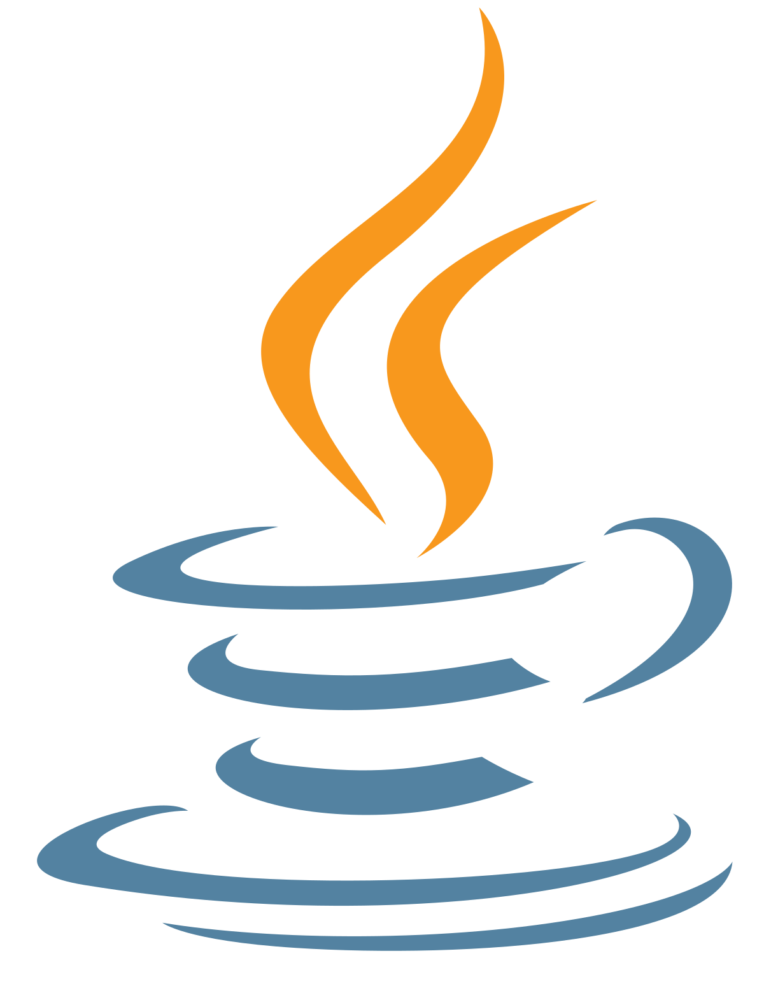

C Language
C is a low level language, meaning it is closer to what the machine can read rather than what a human can read. Quisque velit orci, sagittis pellentesque turpis quis, pharetra dignissim risus. Integer in condimentum massa. Suspendisse vel facilisis mauris. Phasellus sagittis turpis id ullamcorper placerat. Vivamus et ante nunc. Aenean molestie a felis sodales fringilla. Interdum et malesuada fames ac ante ipsum primis in faucibus. Nunc dictum urna et sagittis molestie. Aenean odio nibh, varius non massa ut, vestibulum tincidunt quam. Nunc nibh nisl, suscipit eu erat non, scelerisque facilisis nibh. Mauris fermentum tristique justo, vel tincidunt arcu imperdiet at. Donec elementum risus sapien, eu sodales nisi efficitur in. Phasellus mollis nibh id dolor pulvinar, nec pulvinar leo dictum. Cras vivamus.

C++
C++ is also a low level language, but it is higher compared to C. C++ is built on top of C. Morbi interdum ante et nunc ultrices sollicitudin. Sed interdum dignissim mattis. Mauris leo neque, pellentesque sit amet efficitur vitae, vehicula sed magna. Proin eget tincidunt augue. Pellentesque ac ipsum id quam facilisis faucibus eget sed lectus. Sed ut tortor suscipit, hendrerit tortor ac, convallis massa. Aliquam vulputate mi at elit faucibus, eget sagittis felis ornare. Integer justo quam, consequat porta felis ac, dapibus auctor tortor. Aenean et tellus sit amet dolor volutpat tempor. Vivamus posuere nunc vulputate volutpat viverra. Sed ut libero rhoncus lacus laoreet aliquet eget quis elit. Mauris a libero aliquam, suscipit est at, laoreet tellus. Praesent nec lectus orci vivamus.

Java
Java is a high level language, meaning it is closer to what a human can read rather than what the computer can read. Curabitur consectetur scelerisque consequat. Vestibulum sit amet sapien lectus. In posuere dolor ullamcorper risus placerat malesuada. Etiam euismod sapien non lectus gravida, id cursus nunc gravida. Nunc sagittis massa vel enim pharetra, in ornare ante sagittis. Sed consectetur in odio ut dapibus. Nullam ultrices quis nisl a tincidunt. Vestibulum ante ipsum primis in faucibus orci luctus et ultrices posuere cubilia curae; In hac habitasse platea dictumst. Nunc eget nulla in augue blandit maximus. Vestibulum eleifend laoreet vehicula. Fusce et facilisis augue. Integer sit amet tortor ipsum. Integer placerat augue eget nisl semper tempor. Ut egestas urna lacus, suscipit tristique mi tincidunt.

Python
Python is a high level language like Java, however, it is higher comapred to Java. Etiam auctor, ex vel consectetur dignissim, augue odio pellentesque lorem, eu eleifend magna lorem in ex. Suspendisse maximus finibus mauris, nec varius orci placerat in. Pellentesque lorem magna, auctor non risus ut, ultrices maximus lacus. Integer et tellus et sapien consequat suscipit. Proin pretium diam lorem, non maximus elit malesuada eget. In suscipit tellus quis eleifend pretium. Pellentesque eget nulla eget enim dapibus viverra vel et quam. Pellentesque habitant morbi tristique senectus et netus et malesuada fames ac turpis egestas. Ut eu erat eu sapien eleifend sagittis in ac dolor. Nunc non sodales ligula, ut feugiat eros. Sed vel erat lacus. Nam tincidunt sem sed gravida posuere.